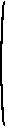
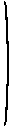

3.4 Quasiconcavity and quasiconvexity
Definitions and basic properties
Think of a mountain in the Swiss Alps: cows grazing on the verdant lower slopes, snow capping the majestic peak.Now forget about the cows and the snow. Ask yourself whether the function defining the surface of the mountain is concave. It is if every straight line connecting two points on the surface lies everywhere on or under the surface.
If, for example, the mountain is a perfect dome (half of a sphere), then this condition is satisfied, so that the function defined by its surface is concave. The condition is satisfied also if the mountain is a perfect cone. In this case, every straight line connecting the peak to another point on the surface lies exactly on the surface.
Now suppose that the mountain is a deformation of a cone that gets progressively steeper at higher altitudes—call it a “pinched cone”. (Many mountains seem to have this characteristic when you try to climb them.) That is, suppose that when viewed from far away, the mountain looks like this:
In this case, a straight line from the top of the mountain to any other point on the surface does not lie on or under the surface, but rather passes through clear air. Thus the function defined by the surface of the mountain is not concave.
The function does, however, share a property with a perfect dome and a cone: on a topographic map of the mountain, the set of points inside each contour—the set of points at which the height of the mountain exceeds any given number—is convex. In fact, each contour line of this mountain, like each contour line of a perfect dome and of a cone, is a circle. With contour lines drawn for regularly-spaced heights (e.g. 50m, 100m, 150m, ...), topographic maps of a dome, cone, and pinched cone are given in the following figure. If you want to see a 3D representation of any of the objects, google the formula given under the corresponding figure.
The spacing of the contour lines differs, but the set of points inside every contour has the same shape for each mountain—it is a disk. In particular, every such set is convex.
If we model the surface of the mountain as a function f of its longitude and latitude (x, y), then a contour is a level curve of f. A function with the property that for every value of a the set of points (x, y) such that f(x, y) ≥ a—the set of points inside every contour on a topographic map—is convex is said to be quasiconcave.
Not every mountain has this property. In fact, if you take a look at a few maps, you'll see that almost no mountain does. A topographic map of an actual mountain is likely to look something like this:
The contours of this mountain do not enclose convex sets. Take, for example, the one in red. The blue line, connecting two points in the set enclosed by the contour, goes outside the set.
Thus the function defined by the surface of this mountain is not quasiconcave.
Let f be a multivariate function defined on the set S. We say that f (like the function defining the surface of a mountain) is quasiconcave if, for any number a, the set of points for which f(x) ≥ a is convex.
- Definition
-
Let f be a function of many variables defined on the set S. For any real number a, the set
Pa = {x ∈ S: f(x) ≥ a}is called the upper level set of f for a.
- Example 3.4.1
- Let f(x, y) = −x2 − y2. The upper level set of f for a is the set of pairs (x, y) such that −x2 − y2 ≥ a, or x2 + y2 ≤ −a. Thus for a > 0 the upper level set for a is empty, and for a < 0 it is a disk of radius (−a)1/2.
- Definition
- The function f of many variables defined on a convex set S is quasiconcave if every upper level set of f is convex. (That is, Pa = {x ∈ S: f(x) ≥ a} is convex for every value of a.)
- Definition
-
Let f be a function of many variables defined on the set S. For any real number a, the set
Pa = {x ∈ S: f(x) ≤ a}is called the lower level set of f for a.
- Definition
- The function f of many variables defined on a convex set S is quasiconvex if every lower level set of f is convex. (That is, Pa = {x ∈ S: f(x) ≤ a} is convex for every value of a.)
The notion of quasiconcavity is weaker than the notion of concavity, in the sense that every concave function is quasiconcave. Similarly, every convex function is quasiconvex.
- Proposition 3.4.1
- A concave function is quasiconcave. A convex function is quasiconvex.
- Proof
-
Denote the function by f, and the (convex) set on which it is defined by S. Let a be a real number and let x and y be points in the upper level set Pa: x ∈ Pa and y ∈ Pa. We need to show that Pa is
convex. That is, we need to show that for every λ ∈ [0,1] we have (1 − λ)x + λy ∈ Pa.
First note that the set S on which f is defined is convex, so we have (1 − λ)x + λy ∈ S, and thus f is defined at the point (1 − λ)x + λy.
Now, the concavity of f implies that
Further, the fact that x ∈ Pa means that f(x) ≥ a, and the fact that y ∈ Pa means that f(y) ≥ a, so thatf((1−λ)x + λy) ≥ (1−λ)f(x) + λf(y). Combining the last two inequalities, we have(1−λ)f(x) + λf(y) ≥ (1−λ)a + λa = a. f((1−λ)x + λy) ≥ a,so that (1−λ)x + λy ∈ Pa. Thus every upper level set is convex and hence f is quasiconcave.
Why are economists interested in quasiconcavity?
The standard model of a decision-maker in economic theory consists of a set of alternatives and an ordering over these alternatives. The decision-maker is assumed to choose her favorite alternative—that is, an alternative with the property that no other alternative is higher in her ordering.To facilitate the analysis of such a problem, we often work with a function that “represents” the ordering. Suppose, for example, that there are four alternatives, a, b, c, and d, and the decision-maker prefers a to b to c and regards c and d as equally desirable. This ordering is represented by the function U defined by U(a) = 3, U(b) = 2, and U(c) = U(d) = 1. It is represented also by many other functions—for example V defined by V(a) = 100, V(b) = 0, and V(c) = V(d) = −1. The numbers we assign to the alternatives are unimportant except insofar as they are ordered in the same way that the decision-maker orders the alternatives. Thus any function W with W(a) > W(b) > W(c) = W(d) represents the ordering.
When the decision-maker is a consumer choosing between bundles of goods, we often assume that the level curves of the consumer's ordering—which we call “indifference curves”—look like this
and not like this
or like this
That is, we assume that every upper level set of the consumer's ordering is convex, which is equivalent to the condition that any function that represents the consumer's ordering is quasiconcave.
It makes no sense to impose a stronger condition, like concavity, on this function, because the only significant property of the function is the character of its level curves, not the specific numbers assigned to these curves.
Functions of a single variable
The definitions above apply to any function, including a function of a single variable. For a function of a single variable, an upper or lower level set is typically an interval of points, or a union of intervals. In the following figure, for example, the upper level set for the indicated value a—that is, the set of values of x for which f(x) ≥ a—is the union of the two blue intervals of values of x: the set of all values between x1 and x2 and between x3 and x4.
By drawing some examples, you should be able to convince yourself that a function of a single variable is quasiconcave if and only if it is nondecreasing, or it is nonincreasing, or it is nondecreasing and then nonincreasing.
- Proposition 3.4.2
-
A function f of a single variable defined on an interval I is quasiconcave if and only if one of the following conditions holds.
- f is nondecreasing
- f is nonincreasing
- there exists a number x* such that f is nondecreasing on {x ∈ I: x ≤ x*} and nonincreasing on {x ∈ I: x > x*}
- there exists a number x* such that f is nondecreasing on {x ∈ I: x < x*} and nonincreasing on {x ∈ I: x ≥ x*}.
- Proof
-
Suppose that f satisfies one of the conditions and suppose that for some number a the points x1 and x2 in I are both members of the upper level set Pa. Then f(x1) ≥ a and
f(x2) ≥ a, so that f(x) ≥ a for every point x between x1 and x2. Thus x ∈ Pa, so that Pa is convex and hence f is
quasiconcave.
If f does not satisfy any of the conditions then we can find x1, x2, and x3 in I such that x1 < x2 < x3 and f(x2) < min{f(x1), f(x3)}. Then the upper level set Pa for a = min{f(x1), f(x3)} includes x1 and x3, but not x2, and hence is not convex, so that f is not quasiconcave.
Differentiable functions
The fact that the graph of a differentiable concave function lies everywhere on or below all of its tangent planes leads to the result that the differentiable function f of many variables defined on the convex set S is concave if and only if| f(x) − f(x*) | ≤ |
∑n i=1f'i(x*)·(xi − x*i) for all x ∈ S and x* ∈ S. |
| x ∈ S, x* ∈ S, and f(x) ≥ f(x*) imply
∑n i=1f'i(x*)·(xi − x*i) ≥ 0. |
Like the characterization of differentiable concave functions, this characterization of differentiable quasiconcave functions is used in the theory of optimization to show that points that satisfy certain “first-order conditions” are global optimizers. The next result states the characterization, and the companion characterization for quasiconvex functions, precisely.
- Proposition 3.4.3
-
The differentiable function f of n variables defined on a convex set S is quasiconcave on S if and only if
and is quasiconvex on S if and only if
x ∈ S, x* ∈ S, and f(x) ≥ f(x*) imply ∑n
i=1f'i(x*)·(xi − x*i) ≥ 0x ∈ S, x* ∈ S, and f(x) ≤ f(x*) imply ∑n
i=1f'i(x*)·(xi − x*i) ≤ 0.
- Source
- For proofs, see Sydsæter (1981), Theorem 5.16 (p. 258) and Simon and Blume (1994), Theorem 21.14 (p. 526 and p. 537).
Twice-differentiable functions
To determine whether a twice-differentiable function is quasiconcave or quasiconvex, we can examine the determinants of matrices known as “bordered Hessians”.- Definition
-
Let f be a twice-differentiable function of n variables. For r = 1, ..., n, the rth order bordered Hessian of f at the point x is the matrix
 0 f'1(x) f'2(x) ... f'r(x)  f'1(x) f"11(x) f"12(x) ... f"1r(x) f'2(x) f"21(x) f"22(x) ... f"2r(x) ... ... ... ... ... f'r(x) f"r1(x) f"r2(x) ... f"rr(x) .
- Proposition 3.4.4
-
Let f be a twice-differentiable function of n variables defined on an open convex set S with x ≥ 0 for all x in S, and for each x ∈ S let Dr(x)
be the determinant of its rth order bordered Hessian at x.
- If f is quasiconcave on S then D1(x) ≤ 0, D2(x) ≥ 0, ..., Dn(x) ≤ 0 if n is odd and Dn(x) ≥ 0 if n is even, for all x in S. (Note that the first condition is automatically satisfied.)
- If f is quasiconvex on S then Dk(x) ≤ 0 for k = 1, ..., n for all x in S. (Note that the first condition is automatically satisfied.)
- If D1(x) < 0, D2(x) > 0, ..., Dn(x) < 0 if n is odd and Dn(x) > 0 if n is even for all x in S then f is quasiconcave on S.
- If Dk(x) < 0 for k = 1, ..., n for all x in S then f is quasiconvex.
- Source
- For a proof of the first and third points, see Arrow and Enthoven (1961), Theorem 5 (p. 797). The second and fourth points follow from the fact that a function f is quasiconvex if and only if −f is quasiconcave.
Note that the conditions don't cover all the possible cases, unlike the analogous result for concave functions. If, for example, Dk(x) ≤ 0 for all k, for all x, but Dr(x) = 0 for some r and some x, then the result does not rule out the possibility that the function is quasiconvex, but it does not tell us that it is.
- Example 3.4.2
- Consider the function f(x) = x2 for x > 0. We have D1(x) = −4x2 < 0 for all x > 0, so we deduce that this function is both quasiconcave and quasiconvex on the set {x: x > 0}.
- Example 3.4.3
- Consider the function f(x) = x2 for x ≥ 0. We have D1(0) = 0, so this function does not satisfy the sufficient conditions for either quasiconcavity or quasiconvexity, although it is in fact both quasiconcave and quasiconvex (by a result for functions of a single variable, because it is nondecreasing).
- Example 3.4.4
- Consider the function f(x1, x2) = x1x2. For x > 0 the sufficient conditions for quasiconcavity are satisfied, while the necessary conditions for quasiconvexity are not. Thus the function is quasiconcave and not quasiconvex on the set {x: x > 0}. For x ≥ 0 the sufficient conditions for quasiconcavity are not satisfied, but the necessary conditions are not violated. (The function is in fact quasiconcave on this domain.)
A property of quasiconcave and quasiconvex functions
The following result is a variant, for quasiconcave functions, of a previous result for concave functions. In the previous result, the function g, of a single variable, is required to be nondecreasing and concave. In this result, it is required to be increasing, which we have seen implies that it is quasiconcave. The proof of the result is an exercise.
- Proposition 3.4.5
-
Let U be a function of many variables and let g be a function of a single variable.
- If U is quasiconcave and g is increasing then the function f defined by f(x) = g(U(x)) for all x is quasiconcave.
- If U is quasiconcave and g is decreasing then the function f defined by f(x) = g(U(x)) for all x is quasiconvex.
A previous result says that the sum of concave functions is concave. In an exercise, you are asked to show that the sum of quasiconcave functions may not be quasiconcave.
Another characterization of quasiconcavity
The following alternative characterization of a quasiconcave function (of any number of variables) is sometimes useful.- Proposition 3.4.6
-
The function f of many variables defined on a convex set S is quasiconcave if and only if for all x ∈ S and x' ∈ S such that f(x) ≥ f(x') we have
f((1−λ)x + λx') ≥ f(x') for all λ ∈ [0, 1].
- Proof
-
First suppose that f is quasiconcave. Let x ∈ S, x' ∈ S, and f(x) ≥ f(x'). Then for a = f(x') we have x ∈ Pa and
x' ∈ Pa. Because f is quasiconcave, Pa is convex, so (1 − λ)x + λx' ∈ Pa for all λ ∈ [0, 1]. Thus f((1 − λ)x +
λx') ≥ a = f(x') for all λ ∈ [0, 1].
Now suppose that for all x ∈ S and x' ∈ S with f(x) ≥ f(x') we have f((1−λ)x + λx') ≥ f(x') for all λ ∈ [0, 1]. For any number a, Pa is either empty, in which case it is convex, or consists of a single point, in which case it is convex, or contains two or more points. In the last case, choose x ∈ Pa and x' ∈ Pa with f(x) ≥ f(x'). Then f((1−λ)x + λx') ≥ f(x') ≥ a (because x' ∈ Pa) for all λ ∈ [0, 1]. Thus (1−λ)x + λx' ∈ Pa, so that Pa is convex and hence f is quasiconcave.
Strict quasiconcavity
This characterization of quasiconcavity motivates the following definition of a strictly quasiconcave function.- Definition
-
The function f of many variables defined on a convex set S is strictly quasiconcave if for all x ∈ S, all x' ∈ S with x' ≠ x, and all λ ∈ (0,1) we have
if f(x) ≥ f(x') then f((1−λ)x + λx') > f(x').
The definition says that a quasiconcave function of a single variable is strictly quasiconcave if its graph has no horizontal sections. For example, the function f defined by f(x) = x3 is strictly quasiconcave.
For a function of two variables, it says that no level curve of a strictly quasiconcave function contains a line segment. (Take x = x' in the definition.) Some level curves of two functions that are not strictly quasiconcave, although these level curves are consistent with the functions' being quasiconcave, are shown in the following figures. In both cases, the red level curve contains a line segment, colored blue. (In the second figure, it does so because it is “thick”—see the earlier example.)